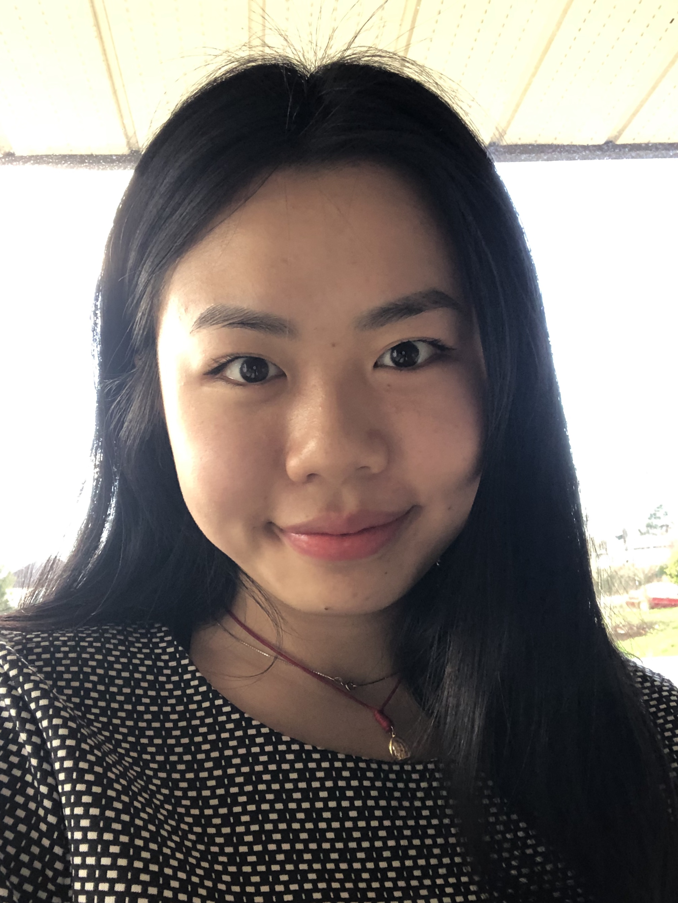
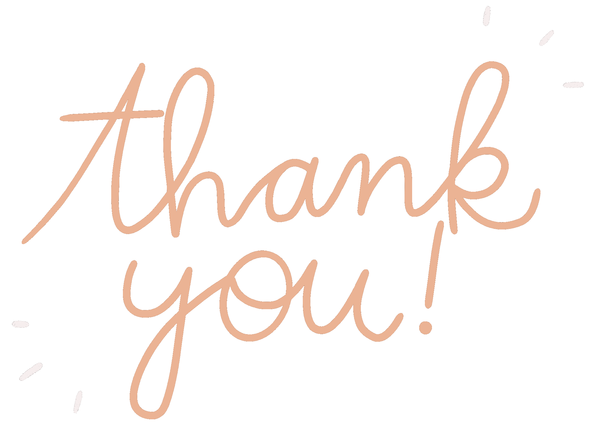

Team 10/10 has been given the opportunity to work on the Community Discussion Platform (CDP) project by Nicolas LeBlanc, Executive Director of MyLivingCity. The team consists of Phuong (Jennifer) Tang-Tran, Joshua Sivertson, and Changsin Park, and together they are called Team 10/10 because of their beauty, brains, and brawn. The CDP project has been created with the purpose of being an online application for collaborative community discussions regarding civic development and improvements.
The Project:
Team 10/10 created the following documents to go along with the process of improving the CDP project:
Meet the Team:
Team 10/10 is filled with incredibly talented people. The team has decided to distribute responsibilities in a way which maximizes each strength:
Jennifer
 Jennifer is known for being an ambitious and detail-oriented worker who approaches problem solving with tenacity. As a result of Jennifer’s strong leadership and communication skills, she has been assigned the Project Manager and Technical Writer role. She is responsible for ensuring the team is on the right track, creating user interface mock-ups, and transcribing significant discussions.
Joshua
Joshua is an aspiring Software Engineer with a keen interest in backend programming languages, particularly C++ and Java. He has been deemed the Technical Lead in this project due to his extensive programming knowledge. Joshua is the liaison between the client and the team.
Changsin
Changsin is a junior web developer with various skills including problem solving and troubleshooting. Changsin’s determination to ensure the project’s quality is an asset for his role as Software Developer. He is contributing to the team with his front-end and back-end knowledge.
Because of each individual’s passion and proven abilities, the team is able to share diverse perspectives and tackle more complex problems.
Meet the Sponsor:
Nicolas LeBlanc is the current Executive Director of MyLivingCity, a Victoria based non profit organization. He has brought his leadership and project management experience to the area of sustainability with his company Network Potential.
The Team's Gratitude
 The team would like to express their gratitude to their sponsor at MyLivingCity, Nic LeBlanc, for providing us with this amazing opportunity. We would also like to give a huge thank you to Saryta Schaerer, Ben Leather, Katie Tanigawa, Jonas Bambi, and the Camosun College ICS faculty for their continuous support and guidance in this project. The team is excited to apply their technical and development skills to ensure the success of the project.
For a more accessible version of the brochure, click here!